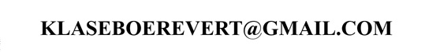

STAMP CATALOGUE INDEX
A large, continuously developed digital
philatelic reference library, originally distributed on CD-ROM
and now supplied as downloadable HTML archives.
I decided in 1999 to create my own stamp
catalogue with pictures of all the stamps from 1840 to 1920 and
add information that is usually not available in classical
catalogues (such as information about forgeries, locals, cancels,
fiscal stamps etc.). Now I would like to share this information
with you. Only a few images are shown on the web (about 1 in 10).
Volume 1 contains United Kingdom, France,
Germany, USA with all areas and colonies
Volume 2 contains: Austria, Benelux, Eastern
Europe, Italy, Russia, Spain, Portugal, Switzerland, South
America with all areas, colonies etc.
Why two volumes? This is actually on
historical grounds, since initially these volumes were contained
on two cd's, but nowadays they are in two ZIP files (I don't use
cd's anymore).
What to expect, examples:
- how to
identify forged Victorian stamps
- classic
stamp forgeries
- British
stamp forgeries
- German
stamp forgeries
- French
stamp forgeries
- local
stamps 19th century
- fiscal
stamps used as postage
- classic
stamp cancels
- forged
classic stamps
- identifying
fake old stamps
- differences between genuine and forged stamps
- fiscal stamps
- Cinderella stamps
- forged Penny Black
- German states stamp forgeries
- old European stamp forgeries
WELCOME and ENJOY!
-Ich spreche Deutsch!-
-Vous pouvez communiquer avec moi en Francais!-
-Ik spreek Nederlands!-
A specialist reference source for difficult
aspects of classic philately that aren't adequately covered by
the major catalogues.
Contact me if you want to order my catalogue
(only 40 Euros for both Volumes).
You will receive a ZIP archive (1.5 Gb for Volume 1 and 1.8 Gb
for Volume 2).
The catalogue is exactly the same as the website version, but
with all ~50,000 images included of course.

!! The information on forgeries alone should
enable you to earn back this money real soon !!